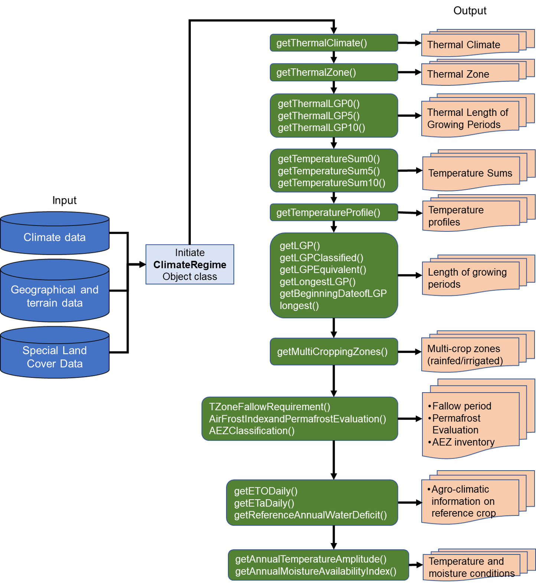

Introduction¶
This module performs climate data analysis and compiling general agro-climatic indicators. These general agro-climatic indicators summarize climatic profiles in the study area for each grid. Figure 4 shows the overall workflow of Module 1. The key input data for this module is the climatic data, and the geographical and terrain data. This section offers descriptions of the all the functions within Module 1, with example code snippets. It is advisable to always run this module first, as several agro-climatic indicators output from Module 1 will get feed into Module 2 (Crop Simulation).
Figure: Overview of Module I: Climate Regime

Mandatory Setting¶
These following functions are required to set up first before AEZ project initialization.
Initialization of M1 Object Class Creation¶
PyAEZ codes utilizes ‘Object-Oriented Programming’ style, meaning that each module has its own Classes containing separate attributes and functions. Therefore, it is essential that the necessary object-classes are initiated at the beginning of each module. For Module 1, the Class that we need is called ClimateRegime, and is imported and initiated.
Setting up Geographical and Terrain Data¶
The next mandatory step after object class creation is to input user’s elevation and geographic latitude information into the object class by using this function. This will generate the latitude map within in the object class.
| Setting up latitudes and elevation | |
|---|---|
| Arguments | Description | Unit | Data Format |
|---|---|---|---|
| lat_min | minimum latitude extent | Decimal Degrees | float |
| lat_max | maximum latitude extent | Decimal Degrees | float |
| elevation | Elevation | meters | 2D NumPy Array |
Uploading the Climatic Data and Soil Water Data¶
The third and final mandatory step of preparation is to incorporate all the required climatic datasets into the object class. Depending on the temporal dimension of climatic datasets, the function will handle time dimension to be able to calculate for year-round (365/366 days for leap year). For agro-climatic analysis , the soil water holding capacity (Sa) is set up as 100 mm and rooting depth of one meter by default, representing the reference crop (grass). The function will proceed the additional internal calculations and water balance calculation for the reference crop.
Make sure the dimensions of all the climatic variables are the same. The system will stop execution once it detects different array dimensions.
| Setting Climate and Soil Water Data | |
|---|---|
| Arguments | Description | Unit | Data Format | Time |
|---|---|---|---|---|
| min_temp | Minimum temperature | °C | 3D-NumPy Array | Daily (365, 366)/Monthly (12) |
| max_temp | Maximum temperature | °C | 3D-NumPy Array | Daily (365, 366)/Monthly (12) |
| precipitation | Total precipitation | mmday-1 | 3D-NumPy Array | Daily (365, 366)/Monthly (12) |
| short_rad | Shortwave radiation | Wm-2 | 3D-NumPy Array | Daily (365, 366)/Monthly (12) |
| wind_speed | Wind speed measured at 2-meter height | ms-1 | 3D-NumPy Array | Daily (365, 366)/Monthly (12) |
| rel_humidity | Relative humidity | Decimal (0-1) | 3D-NumPy Array | Daily (365, 366)/Monthly (12) |
| Sa | Soil Water Holding Capacity | mm/m | Int/float/2D-NumPy Array | None |
| D | Rooting Depth | m | Int/float | None |
Optional Setting¶
These following functions are optional during the initial setup before the main functions are executed.
Setting the Study Area Inputs¶
This function is set up as an optional step which set up the mask layer as input which reduces the computation time outside the pixels of considerations.
| Mask Layer Setting | |
|---|---|
| Arguments | Description | Unit | Data Format |
|---|---|---|---|
| admin_mask | Mask Layer/Region of Interest | Binary(0,1)/Categorical(1,2,...) | 2D NumPy Array |
| no_data_value | Value of mask layer to skip calculation | Mask value from the layer. Default to 0 | Integer |
Major Functionalities¶
Thermal Climate¶
The Thermal Climate function calculates and classifies latitudinal thermal climate, which will be used later in Module 2 for the assessment of potential crops and Land Utilization Types (LUT) presence in each grid cell. It is advisable to use an average of multiple years of temperature data (e.g. 30 years) rather than a single-year data, to obtain better representation of the climate for the study region. Table 5 describes the classification of thermal climates based on:
- the monthly mean temperature (sea-level adjusted)
- the ratios between summer/winter rainfall and the reference evapotranspiration (P/ETo)
- the temperature amplitude as a measure of continentality (i.e. the difference between temperatures of warmest and coldest month) (Fischer et al., 2021).
Additional Information
In GAEZ, the sea-level adjusted monthly mean temperature is calculated with a fixed lapse of 0.55°C/100 meters of elevation. This adjustment is already implemented in PyAEZ.
| Calling Thermal Climate | |
|---|---|
Input
| Arguments | Description | Data Type |
|---|---|---|
| None | - | - |
Output
| Arguments | Description | Data Type |
|---|---|---|
| tclimate | Thermal Climate Classes | 2D-NumPy Array |
Classification of Thermal Climate Classes According to Rainfall and Temperature Seasonality
| Climate | Rainfall and Temperature Seasonality | Thermal Climate Class | Pixel Value |
|---|---|---|---|
| Tropics All months with monthly mean sea-level adjusted temperature> 18°C and monthly temperature amplitude < 15 °C |
Tropics with actual mean temperature (Ta) above 20 °C | Tropical lowland | 1 |
| Tropics with actual mean temperatures below 20 °C | Tropical highland | 2 | |
| Subtropics One or more months with monthly mean temperatures, corrected to sea level, below 18°C, but all above 5°C, and 8-12 months above 10°C |
Northern Hemisphere: P/ET0 in April-September >= P/ET0 in October-March. Southern Hemisphere: P/ET0 in October-March >= P/ET0 in April-September. |
Summer rainfall | 3 |
| Northern Hemisphere: P/ET0 in April-September <= P/ET0 in October-March. Southern Hemisphere: P/ET0 in October-March <>= P/ET0 in April-September. |
Winter rainfall | 4 | |
| Annual rainfall less than 250 mm | Low rainfall | 5 | |
| Temperate At least one month with monthly mean temperatures, corrected to sea level, below 5°C and 1-3 months above 10°C |
Seasonality less than 20°C | Oceanic | 6 |
| Seasonality 20 - 35°C | Sub-continental | 7 | |
| Seasonality more than 35°C | Continental | 8 | |
| Boreal At least one month with monthly mean temperatures, corrected to sea level, below 5°C and 1-3 months above 10°C |
Seasonality less than 20°C | Oceanic | 9 |
| Seasonality 20 - 35°C | Sub-continental | 10 | |
| Seasonality more than 35°C | Continental | 11 | |
| Arctic | All months with monthly mean temperatures, corrected to sea level, below 10°C | Arctic | 12 |
Additional Information
Monthly temperature amplitude = monthly maximum temperature - monthly minimum temperature Seasonality = the difference in mean temperature of the warmest and the coldest month
Thermal Zone¶
The thermal zone is classified based on the actual temperature which reflects on the temperature regimes of the major thermal climaes.
| Calling Thermal Zones | |
|---|---|
Input
| Arguments | Description | Data Type |
|---|---|---|
| None | - | - |
Output
| Arguments | Description | Data Type |
|---|---|---|
| tzone | Thermal Zone Classes | 2D-NumPy Array |
Classification of Thermal Zone Classes According to Rainfall and Temperature Seasonality
| Climate | Rainfall and Temperature Seasonality | Thermal Climate Class | Pixel Value |
|---|---|---|---|
| Tropics All months with monthly mean sea-level adjusted temperature> 18°C and monthly temperature amplitude < 15 °C |
Tropics with annual mean temperature above 20°C | Warm | 1 |
| Tropics with annual mean temperatures below 20°C | Cool/Cold/Very Cold | 2 | |
| Subtropics One or more months with monthly mean temperatures, corrected to sea level, below 18°C, but all above 5°C, and 8-12 months above 10°C |
Annual mean temperatue below 20°C | Warm/Moderately cool | 3 |
| At least one month with monthly mean temperature below 5°C and 4 or more months above 10°C | Cool | 4 | |
| At leaset one month with monthly mean temperatures below 5°C and 1-3 months above 10°C | Cold | 5 | |
| All months with monthly mean temperatures below 10°C | Very cold | 6 | |
| Temperate At least one month with monthly mean temperatures, corrected to sea level, below 5°C and 1-3 months above 10°C |
At lease one month with monthly mean temperatures below 5°C and 4 or more months above 10 | Cool | 7 |
| At lease one month with monthly mean temperatures below 5°C and 1-3 months above 10°C | Cold | 8 | |
| All months with monthly mean temperatures below 10°C | Very cold | 9 | |
| Boreal At least one month with monthly mean temperatures, corrected to sea level, below 5°C and 1-3 months above 10°C |
At lease one month with monthly mean temperatures below 5°C and 1-3 months above 10°C | Cold | 10 |
| All months with monthly mean temperatures below 10°C | Very cold | 11 | |
| Arctic | All months with monthly mean temperatures, corrected to sea level, below 10°C | Arctic | 12 |
Additional Information
Monthly temperature amplitude = monthly maximum temperature - monthly minimum temperature
Thermal Length of Growing Period (LGPt)¶
Thermal length of growing period (LGPt), also known as temperature growing periods in GAEZ terminology, is defined as the number of days in a year during which the daily mean temperature (Ta) is conductive to crop growth and development. PyAEZ uses the AEZ three standard temperature thresholds for LGPt:
- Periods with Ta > 0°C (LGPt0)
- Periods with Ta > 5°C (LGPt5)
- Periods with Ta > 10°C (LGPt10)
Input
| Arguments | Description | Data Type |
|---|---|---|
| None | - | - |
Output
| Arguments | Description | Data Type |
|---|---|---|
| lgpt | temperature growing periods at specific degree thershold (Days) | 2D-NumPy Array |
Temperature Summation (TSUM)¶
Temperature summation corresponds to the accumulated temperature which represents the crop/LUT specific heat requirements (Fischer et al., 2021). Reference temperature sums (TSUM) are calcualted for each grid-cell by accumulative daily average temperature (Ta) for days when Ta is above the thresholds as follows:
- TSUM with Ta > 0°C (TSUMt0)
- TSUM with Ta > 5°C (TSUMt5)
- TSUM with Ta > 10°C (TSUMt10)
Input
| Arguments | Description | Data Type |
|---|---|---|
| None | - | - |
Output
| Arguments | Description | Data Type |
|---|---|---|
| tsum | acccumulated temperature at specific degree thershold (Degree-Days) | 2D-NumPy Array |
Temperature Profiles¶
Temperature profiles can be classified to nine classes of different daily temperature ranges between Ta < -5°C to Ta > 30°C. This classification uses 5°C intervals as well as distinguishes the increasing and decreasing temperature trends within a year (Fischer et al., 2021).
| Calling Temperature Profiles | |
|---|---|
Input
| Arguments | Description | Data Type |
|---|---|---|
| None | - | - |
Output
| Arguments | Description | Data Type |
|---|---|---|
| tprofile | Each NumPy Array corresponds to each temperature profile class listed as (A1-A9, B1-B9) | list of 18 2D-NumPy Arrays |
Temperature Profile Classes
| Mean Daily Temperature (°C) | Increasing Temperature Trend | Decreasing Temperature Trend |
|---|---|---|
| 30 | A1 | B1 |
| 25 - 30 | A2 | B2 |
| 20 - 25 | A3 | B3 |
| 15 - 20 | A4 | B4 |
| 10 - 15 | A5 | B5 |
| 5 - 10 | A6 | B6 |
| 0 - 5 | A7 | B7 |
| -5 - 0 | A8 | B8 |
| < -5 | A9 | B9 |
Length of Growing Period (LGP)¶
The length of growing periods (LGP) is defined as the number of days during the year when the temperature regime and moisture supply are conductive to crop growth and development. LGP, therefore, acts as an agro-climatic indicator of the potential productivity of an area of land.
The LGP determination in PyAEZ is determined based on prevailing temperatures and the water balance calculated for an assumed reference crop. Mathematically, LGP day is considered when average daily temperature is above 5°C and ETa of the reference crop exceeds a specified fraction of maximum reference e, i.e., LGP = count(ETa >= 0.4 * ETa). For reference water balance calculation, the underlying LGP calculation assumes an effective soil depth of one meter and a soil water holding capacity Smax of 100 mm/m, which is calculated year-round for 365 days or 366 for leap year. A specific list of kc factors used to relate the reference crop potential evapotranspiration (ETM) are implemented in PyAEZ in the following table.
Input
| Arguments | Description | Data Type |
|---|---|---|
| None | - | - |
Output
| Arguments | Description | Data Type |
|---|---|---|
| lgp | Length of Growing Period (days) | 2D-NumPy Array |
Kc Values used in Module 1 for the calculation of the maximum evapotranspiration (ETm)
| Daily Temperature Condition | Remarks | Kc |
|---|---|---|
| Areas with year-round temperature growing periods (LGPt5 = 365 days) | ||
| Daily Ta >= 5°C; LGPt5 = 365 days | In areas with year-round LGPt5, the kc values stays at 1 | 1.0 |
| Areas with dormancy period or cold break - LGPt5 less than 365 days |
||
| Daily Ta <= 0°C, Tmax <0°C | Precipitation falls as snow and is added to snow bucket | 0.0 |
| Daily Ta <= 0°C; Tmax >=0°C | Snowmelt takes place (water balance = precipitation +snowmelt); minor evapotranspiration | 0.1 |
| 0°C < Daily Ta < 5°C; Ta trend upward | Some biological activities before the start of the growing period | 0.2 |
| Daily Ta >= 5°C, LGPt5<365 days; Case 1 | Kc used for the days prior to the start of the growing period | 0.5 |
| Daily Ta >= 5°C, LGPt5<365 days; Case 2 | Kc increases from 0.5 to 1.0 during the first month of LGP | 0.5 - 1.0 |
| Daily Ta >= 5°C, LGPt5<365 days; Case 3 | Kc = 1 until the daily Ta falls below 5°C | 1.0 |
| 0°C < Daily Ta < 5°C, Ta trend downward | Reduced biological activities before dormancy | 0.2 |
Equivalent Length of Growing Period (LGPequv)¶
Reference LGP accounts for both temperature and soil moisture conditions and do not necessarily accounts for significant differences in wetness conditions especially with Long LGPs (> 225 days). For a better reflection of wetness conditions, equivalent LGP is used, which is defined based on the regression analysis of the reference LGP and the humidity index (P/ET0). as follows:
A quadratic polynomial is used to express the relationship between the number of growing period days and the annual humidity index. Parameters were estimated using data of all grid cells with essentially year-round temperature growing periods, i.e., with LGPt5 = 365.
Input
| Arguments | Description | Data Type |
|---|---|---|
| None | - | - |
Output
| Arguments | Description | Data Type |
|---|---|---|
| lgp_equv | Equivalent LGP (days) | 2D-NumPy Array |
Moisture Regime (LGP Classes)¶
LGP data can also be used for the classification of land into generalized moisture regime classes. The GAEZ definitions of each moisture regime classes presented as follows:
Input
| Arguments | Description | Data Type |
|---|---|---|
| lgp | Length of growing period (Days) | 2D-NumPy Array |
Output
| Arguments | Description | Data Type |
|---|---|---|
| lgp_class | Moisture Regime | 2D-NumPy Array |
Classification of Moisture Regimes Based on Length of Growing Period
| Length of Growing Periods (Days) | Moisture Regime | Pixel Value |
|---|---|---|
| 0 | Hyper-arid | 1 |
| < 60 | Arid | 2 |
| 60 - 119 | Dry semi-arid | 3 |
| 120 - 179 | Moist semi-arid | 4 |
| 180 - 269 | Sub-humid | 5 |
| 270 - 364 | Humid | 6 |
| >= 365 (year-round growing period) | Per-humid | 7 |
Thermal Zones for Fallow Requirements¶
Fallow is an agricultural technique that consists of not sowing the arable land during one or more growing seasons. In AEZ framework, the fallow factors have been established by main crop groups and environmental conditions. The crop groups include cereals, legumes, roots, and tubers, and a miscellaneous group consisting of long-term annuals/perennials. The fallow factors are expressed as percentage of time during the fallow-croopping cycle the land must be under fallow. PyAEZ determine the fallow requirements using thermal zones. For further information on the fallow period requirements, please refer to Appendix 6-10 of the GAEZ v4 Model Documentation (Fischer et al., 2021).
| Calling Revised Thermal Zones for Fallow Requirements | |
|---|---|
Input
| Arguments | Description | Data Type |
|---|---|---|
| tzone | Thermal Zone Classes | 2D-NumPy Array |
Output
| Arguments | Description | Data Type |
|---|---|---|
| fallow | Thermal zones for fallow requirements | 2D-NumPy Array |
Thermal Zone Classes Definitions Relevant to Fallow Period Requirements
| Thermal Zone Name | Class Definition | Pixel Value |
|---|---|---|
| Tropics | Annual mean temperature > 25°C | 1 |
| Tropics | Annual mean temperature between 20 - 25°C | 2 |
| Tropics | Annual mean temperature between 15 - 20°C | 3 |
| Tropics | Annual mean temperature < 15°C | 4 |
| Seasonal | Mean Temperature of the warmest month > 20°C | 5 |
| Seasonal | Mean Temperature of the warmest month < 20°C | 6 |
Air Frost Index and Permafrost Evaluation¶
Occurrence of continuous or discontinuouos permafrost conditions are used in the suitability assessment. Permafrost areas are characterized by sub-soil at or below the freezing point for tow or more years. PyAEZ utilizes the air frost index (FI) which is used to characterize climate-derived permafrost condition.
Reference permafrost zones are determined based on prevailing daily mean air temperature (Ta). For the first step of calcualtion, the accumulated degree-days, above and below 0°C are used to calculate two indices, the thawing index (DDT) and the freezing index (DDF).
| Calling Air Frost Index | |
|---|---|
Input
| Arguments | Description | Data Type |
|---|---|---|
| None | None | None |
Output
| Arguments | Description | Data Type |
|---|---|---|
| permafrost | air frost index and permafrost classes | python list of 2D-NumPy Arrays as (air frost index, permafrost) |
By GAEZ assessment, four classes are defined and their probability of permafrost by the following table.
Classification of Permafrost Areas Used in the GAEZ Assessment
| Permafrost Class | Value of Frost Index (FI) | Probability of Permafrost (%) | Pixel Value |
|---|---|---|---|
| Continuous permafrost | >0.625 | >67 | 1 |
| Discontinuous permafrost | 0.57 - 0.625 | 33 - 67 | 2 |
| Sporadic permafrost | 0.395 - 0.57 | 5 - 33 | 3 |
| No permafrost | <0.495 | <5 | 4 |
AEZ Classification¶
The agro-ecological zones (AEZ) methodology provides a framework for establishing a spatial inventory of land resources compiled from global national environmental data sets and assembled to quantify multiple spatial characteristics required for the assessments of land productivity under location-specific agro-ecological conditions.The inventory combines spatial layers of thermal and moisture regimes with broad categories of soil/terrain qualities. It also indicates locations of areas with irrigated soils and shows land with severely limiting bio-physical constraints including very cold and very dry (desert) areas as well as areas with very steep terrain or very poor soil/terrain conditions. For further information on the classification criteria, please refer to Chapter 10 of the GAEZ v4 Model Documentation (Fischer et al., 2021).
| Calling AEZ Classification | |
|---|---|
Input
| Arguments | Description | Data Type |
|---|---|---|
| tclimate | Thermal Climate | 2D-NumPy Array |
| lgp | Length of Growing Period (Days) | 2D-NumPy Array |
| lgp_equv | Equivalent Length of Growing Period (days) | 2D-NumPy Array |
| lgpt_5 | Temperature Growing Period (5°C threshold) | 2D-NumPy Array |
| soil_terrain_lulc | soil/terrain/special land cover classes | 2D-NumPy Array |
| permafrost | permafrost classes | 2D-NumPy Array |
Developer's Note
In GAEZ, the special soil/terrain land cover data is preprocessed from existing land cover data. However, the actual preparation steps for this specific data is sparingly documented. At the moment, users can get this layer already available in GAEZ v4 data portal (https://gaez.fao.org/pages/data-viewer) under Land and Water Resources Section and select the variable name "Soil/terrain and special purpose land cover classes". You can download the data with resolution of 30-arc seconds.
Output
| Arguments | Description | Data Type |
|---|---|---|
| aez | Classified AEZ Zones | 2D-NumPy Array |
The basic principles and criteia used for the compilation of AEZ class layer are listed as below:
- Thermal Climate Classes (TC): regrouping all the thermal climate classes into:
- TC1 : Tropics, lowland
- TC2 : Tropics, highland
- TC3 : Subtropics
- TC4 : Temperature climate
- TC5 : Boreal climate
- TC6 : Arctic climate
- Thermal Zone Classes (TZ): regrouping all the thermal zones classes into:
- TZ1 Warm: monthly Ta >= 10°C and average annual Ta >= 20°C
- TZ2 Moderately cool: monthly Ta >=5°C for all months; monthly Ta >= 10°C for 8 or more months
- TZ3 Moderate: monthly Ta >=10°C for 5 or more months; number of days with mean temperature above 20°C(LGPt20) is 75 days or more; accumulated temperature durng the period with Ta >=10°C exceeds 3000 degree-days
- TZ4 Cool: monthly Ta >= 10°C for 4 or more months, average annual Ta >= 0°C
- TZ5 Cold: monthly Ta >= 10°C for 1 to 3 months; average annual Ta >= 0°C
- TZ6 Very cold: monthly Ta < 10°C for all monthls and/or average annual Ta < 0°C
- Thermal Regime Classes (TRC) are delinatead to define AEZs by combining thermal climate and thermal zones in a systematic way as below:
| TRC Class | TRC Class Name | TC1 | TC2 | TC3 | TC4 | TC5 | TC6 | TZ1 | TZ2 | TZ3 | TZ4 | TZ5 | TZ6 |
|---|---|---|---|---|---|---|---|---|---|---|---|---|---|
| TRC1 | Tropics, lowland | X | X | ||||||||||
| TRC2 | Tropics, highland | X | X | X | |||||||||
| TRC3 | Subtropics, warm | X | X | ||||||||||
| TRC4 | Subtropics, moderately cool | X | X | ||||||||||
| TRC5 | Subtropics, cool | X | X | ||||||||||
| TRC6 | Temperate, moderate | X | X | ||||||||||
| TRC7 | Temperate, cool | X | X | ||||||||||
| TRC8 | Boreal/ Cold, no PFR | X | X | X | X | X | |||||||
| TRC9 | Boreal/ Cold, with PFR | X | X | X | X | X | |||||||
| TRC10 | Arctic/ Very cold | X | X | X | X | X | X |
Moisture Regime Class (M) : are delineated into four classes based on results of daily reference water balance as by the following definitions:
- M1 : desert/arid areas where 0 <= LGP <60 days
- M2 : semi-arid/dry areas with 60 <= LGP < 180
- M3 : sub-humid/moist area with 180 <= LGP < 270
- M4 : humid/wet areas where LGP>270
If a location has LGPt5 >330 days, length of growing period (LGP) is used; if not, equvalent LGP (LGPequv) will be used to classify.
Soil/Terrain Related Classes are mapped related to soil quality and terrain conditions as provided in special soil/terrain lulc land cover classes as below:
- S1 : very steep terrain, sum of percentages of slope class (30 - 45%) and (slp >45) exceed a given target threshold (75%), sum of slope class (slopes <= 8%) is less than a maximum threshold
- S2 : area with hydromorphic soils (includes all Gleysols, Histosols, all gleyic and stagnic soil types of FAO74 and FAO90 classification)
- S3 : grid cells with no or slight soil/terrain limitations
- S4 : areas with moderate soil/terrain constraints
- S5 : areas with severe and very severe soil/terrain limitations and so-called miscellaneous units of HWSD soil database (e.g., rock outcrops, sand dunes, glaciers, etc)
Selected Special Purpose Land Cover Classes are related to land cover inventory using three specific properties to map.
- L1 : dominanace of inland water bodies, land cover share of water exceeds a specific threshold (>75%)
- L2 : dominanace of artificial surface, land cover share of artificial surface meet the minimum 75% threshold.
- L3 : irrigated cropland. For irrigated cropland, the share must exceeds a specific minimum threshold (>20%). For cropland, the shoare must exceed a minimum threshold (40%) and at least half of the cropland in a pixel is equipped for irrigation.
By combining all these materials, the AEZ classification is characterized by the following definitions. Each pixel value represents an AEZ zone.
- AEZ 1 to 6: combination of TRC1 (tropics, lowland) with M2-M4 and S3 -S4;
- AEZ 7 to 12: combination of TRC2 (tropics, highland) with M2-M4 and S3-S4;
- AEZ 13 to 18: combination of TRC3 (subtropics, warm) with M2-M4 and S3- S4;
- AEZ 19 - 24: combination of TRC4 (subtropics, moderately cool) with M2-M4 and S3-S4;
- AEZ 25 - 30: combination of TRC5 (subtropics, cool) with M2-M4 and S3-S4;
- AEZ 31 - 36: combination of TRC6 (temperate climate, moderate) with M2-M4 and S3-S4;
- AEZ 37 - 42: combination of TRC7 (temperate climate, cool) with M2-M4 and S3-S4;
- AEZ 43 - 48: combination of TRC8 (boreal/cold, no permafrost) with M2-M4 and S3-S4;
- AEZ 49: dominantly very steep terrain; all grid cells where soil/terrain related class S1 occurrs;
- AEZ 50: land with severe soil/terrain limitations; covers all areas of S5 except where set to classes AEZ-49 or AEZ-51 to AEZ-57;
- AEZ 51: land with ample irrigated soils; set for pixels where land equipped for irrigation exists and exceeds the specified thresholds for class L3;
- AEZ 52: dominantly hydromorphic soils; set for pixels where class S2 occurrs, but excluding grid cells which were previously set to classes AEZ-49 or AEZ-51;
- AEZ 53: desert/arid; delineates all areas in the arid moisture class M1, except for special purpose land cover classes L1, L2, L3, soil/terrain classes S1 (very steep terrain) and S2 (hydromorphic soils), or thermal regime class TRC10 (i.e., arctic/very cold).
- AEZ 54: boreal/cold climate with permafrost; incluldes all pixels where TRC9 occurs (except for special purpose land cover L1 and L2, or soil/terrain classes S1 and S2, or moisture class M1);
- AEZ 55: arctic/very cold climate; includes all pixels where TRC10 occurrs (except for special purpose land cover L1 and l2, soil/terrain classes S1 and S2);
- AEZ 56: dominantly built-up/artificial surface; is set in all grid cells where L2 occurrs;
- AEZ 57: dominantly inland water, is set in all grid cells where L1 occurrs.
Multi-cropping Zonation¶
The multi-cropping zonation is another aspect of AEZ suitability analysis which evaluates the full potential of time availability of considering multiple crop types for either rainfed or irrigated conditions. It utilizes growth cycle potentials and temperature requirements available for crop growths using agro-climatic indicators. The potential growing period in rainfed conditons is represented by LGP while under irrigated conditions, the length temperature of growing period and annual accumulated temperature summations are applied.
The delineation of the multi-cropping potential zones are fully applied based on the following attributes:
- LGP: length of growing period (the number of days when temperature and soil moisture permits crop growth)
- LGPt5: the number of days with mean daily temperatures above 5 °C
- LGPTt10: the number of days with mean daily temperatures above 10 °C
- TSUM0: accumulated temperature (degree-days) on days when mean daily temperatures >= 0°C
- TSUM10: accumulated temperature (degree-days) on days when mean daily temperatures >= 10°C
- TSG5: accumulated temperature on growing period days when mean daily temperature >= 5°
- TSG10: accumulated temperature on growing period days when mean daily temperature >= 10°C
| Calling Multi-cropping Zonation | |
|---|---|
Input
| Arguments | Description | Data Type |
|---|---|---|
| tclimate | Thermal Climate | 2D-NumPy Array |
| lgp | Length of Growing Period (Days) | 2D-NumPy Array |
| lgpt_5 | Temperature Growing Period (5°C threshold) | 2D-NumPy Array |
| lgpt_10 | Temperature Growing Period (10°C threshold) | 2D-NumPy Array |
| tsum0 | Temperature Summation (for Ta >=5°C threshold) | 2D-NumPy Array |
| tsum10 | Temperature Summation (for Ta >=10°C threshold) | 2D-NumPy Array |
Output
| Arguments | Description | Data Type |
|---|---|---|
| multi_crop_zone | A python list of multi-cropping zones as [multi-crop_rainfed, multi-crop_irrigated] | A python list of two 2D NumPy Arrays |
The classification schema of multi-cropping zones for rainfed and irrigated conditions are provided as below:
Table: Classification Schema of Multi-cropping Zones for Rainfed in Lowland Tropics
| Zone | LGP | LGPt5 | LGPt10 | TSUM0 | TSUM10 | TSG5 | TSG10 |
|---|---|---|---|---|---|---|---|
| A | - | - | - | - | - | - | - |
| B | >=45 | >=120 | >=90 | >=1600 | >=1200 | - | - |
| C | >=220 | >=220 | >120 | >=5500 | - | >=3200 | >=2700 |
| C | >=200 | >=200 | >=120 | >=6400 | - | >=3200 | >=2700 |
| C | >=180 | >=200 | >=120 | >=7200 | - | >=3200 | >=2700 |
| D | >=270 | >=270 | >=165 | >=5500 | - | >=4000 | >=3200 |
| D | >=240 | >=240 | >=165 | >=6400 | - | >=4000 | >=3200 |
| D | >=210 | >=240 | >=165 | >=7200 | - | >=4000 | >=3200 |
| E | N.A | N.A | N.A | N.A | N.A | N.A | N.A |
| F | >=300 | >=300 | >=240 | >=7200 | - | >=5100 | >=4800 |
| G | N.A | N.A | N.A | N.A | N.A | N.A | N.A |
| H | >=360 | >=360 | >=360 | >=7200 | >7000 | - | - |
N.A: Not available
Table: Classification Schema of Multi-cropping Zones for Rainfed in All Thermal Zones
| Zone | LGP | LGPt5 | LGPt10 | TSUM0 | TSUM10 | TSG5 | TSG10 |
|---|---|---|---|---|---|---|---|
| A | - | - | - | - | - | - | - |
| B | >=45 | >=120 | >=90 | >=1600 | >=1200 | - | - |
| C | >=180 | >=200 | >=120 | >=3600 | >=3000 | >=3200 | >=2700 |
| D | >=210 | >=240 | >=165 | >=4500 | >=3600 | >=4000 | >=3200 |
| E | >=240 | >=270 | >=180 | >=4800 | >=4500 | >=4300 | >=4000 |
| F | >=300 | >=300 | >=240 | >=5400 | >=5100 | >=5100 | >=4800 |
| G | >=330 | >=330 | >=270 | >=5700 | >=5500 | - | - |
| H | >=360 | >=360 | >=330 | >=7200 | >7000 | - | - |
Table: Classification Schema of Multi-cropping Zones for Irrigated in Lowland Tropics
| Zone | LGPt5 | LGPt10 | TSUM0 | TSUM10 | TSG5 | TSG10 |
|---|---|---|---|---|---|---|
| A | - | - | - | - | - | - |
| B | >=120 | >=90 | >=1600 | >=1200 | - | - |
| C | >=220 | >120 | >=5500 | - | >=3200 | >=2700 |
| C | >=200 | >=120 | >=6400 | - | >=3200 | >=2700 |
| C | >=200 | >=120 | >=7200 | - | >=3200 | >=2700 |
| D | >=270 | >=165 | >=5500 | - | >=4000 | >=3200 |
| D | >=240 | >=165 | >=6400 | - | >=4000 | >=3200 |
| D | >=240 | >=165 | >=7200 | - | >=4000 | >=3200 |
| E | N.A | N.A | N.A | N.A | N.A | N.A |
| F | >=300 | >=240 | >=7200 | - | >=5100 | >=4800 |
| G | N.A | N.A | N.A | N.A | N.A | N.A |
| H | >=360 | >=360 | >=7200 | >7000 | - | - |
N.A: Not available
Table: Classification Schema of Multi-cropping Zones for Irrigated in All Thermal Zones
| Zone | LGPt5 | LGPt10 | TSUM0 | TSUM10 | TSG5 | TSG10 |
|---|---|---|---|---|---|---|
| A | - | - | - | - | - | - |
| B | >=120 | >=90 | >=1600 | >=1200 | - | - |
| C | >=200 | >=120 | >=3600 | >=3000 | >=3200 | >=2700 |
| D | >=240 | >=165 | >=4500 | >=3600 | >=4000 | >=3200 |
| E | >=270 | >=180 | >=4800 | >=4500 | >=4300 | >=4000 |
| F | >=300 | >=240 | >=5400 | >=5100 | >=5100 | >=4800 |
| G | >=330 | >=270 | >=5700 | >=5500 | - | - |
| H | >=360 | >=330 | >=7200 | >7000 | - | - |
Table: Multi-cropping zone outputs
| Multi-cropping Zone | Description | Pixel Value |
|---|---|---|
| A | Zones of no cropping (too cold or too dry for rainfed crops) | 1 |
| B | Zones of single cropping | 2 |
| C | Zones of limited double cropping (relay cropping; single wetland rice may be possible) | 3 |
| D | Zones of double cropping (in Zone D, sequential double cropping including wetland rice is not possible) | 4 |
| E | Zones of double cropping with rice (sequential double cropping with one wetland rice crop is possible in Zone E) | 5 |
| F | Zone of double rice cropping or limited triple cropping (may partly involve relay cropping. A third crop is not possible in case of two wetland rice crops) | 6 |
| G | Zone of triple cropping (sequential cropping of three short-cycle crops; two wetland rice crops are possible in Zone G) | 7 |
| H | Zone of triple rice cropping (sequential cropping of three wetland rice crops is possible) | 8 |
Developer's Note
LGP criteria is omitted out for the zonation of multi-cropping potential for irrigated conditions due to the consideration that LGPtx is more decisive in irrigated condition while LGP is more relevant in the rainfed condition.
Annual Temperature Amplitude¶
The annual temperature amplitude is the AEZ criteria defined as the temperature difference from the temperature of the hottest month and the coldest month in a specified year. This is a measure of how much the temperature varies throughout the year, and to describe the continentality influence of agro-climatic condition.
| Calling Annual Temperature Amplitude | |
|---|---|
Input
| Arguments | Description | Data Type |
|---|---|---|
| None | - | - |
Output
| Arguments | Description | Data Type |
|---|---|---|
| ann_temp_amp | Annual Temperature Amplitude (Unit = °C) | 2D-NumPy Array |
Annual Reference Evapotranspiration (ET0)¶
This function calculates the year-round summation of reference evapotranspiration (ET0) of an area of interest.
| Calling Annual Reference Evapotranspiration | |
|---|---|
Input
| Arguments | Description | Data Type |
|---|---|---|
| None | - | - |
Output
| Arguments | Description | Data Type |
|---|---|---|
| et0 | annual reference evapotranspiration (Unit = mm) | 2D-NumPy Array |
Annual Reference Actual Evapotranspiration (ETa)¶
This indicator calculates the year-round summation of the actual evapotranspiration (ETa) of a reference crop, obtained from reference water balance calculation.
| Calling Annual Reference Actual Evapotranspiration | |
|---|---|
Input
| Arguments | Description | Data Type |
|---|---|---|
| None | - | - |
Output
| Arguments | Description | Data Type |
|---|---|---|
| eta | annual reference actual evapotranspiration (Unit = mm) | 2D-NumPy Array |
Annual Moisture Availability Index (P/ET0)¶
This indicator compares with the incoming precipitation to the evaporative demand of the assumed reference crop. This calculation focuses on year-round period. Value ranges from 0 (P < ET0) to 100 (P = ET0) or more than 100. Due to the possible division by zero could trigger infinity values in P/ET0 calculation, the maximum value is curtailed to 30000. Note that P/ET0 is applied by a multiplication factor of 100.
| Calling Annual Moisture Availability Index | |
|---|---|
Input
| Arguments | Description | Data Type |
|---|---|---|
| None | - | - |
Output
| Arguments | Description | Data Type |
|---|---|---|
| p_et0 * 100 | annual moisture suitability index(Unit = Unitless) | 2D-NumPy Array |
Reference Annual Water Deficit (Wde)¶
Reference annual water deficit (Wde) is the difference between annual potential and actual evapotranspiration; both obtained from reference water balance calculation. This indicator provides information of discrepency between evaporative demand of a well-irrigated vegetation and the actual moisture supply under rainfed condition. This indicator does not consider the actual soil condition, due to the condition that the reference water balance calculation uses soil water holding capacity of 100mm.
| Calling Reference Annual Water Deficit | |
|---|---|
Input
| Arguments | Description | Data Type |
|---|---|---|
| None | - | - |
Output
| Arguments | Description | Data Type |
|---|---|---|
| wde | reference annual water deficit (Unit = mm) | 2D-NumPy Array |
Net Primary Productivity (NPP)¶
By GAEZ algorithm, the net primary productivity is estimated as a function of incoming solar radiation and soil moisture at the rhizosphere. By the logic, NPP of a natural vegetation has a close relationship with the actual crop evapotranspiration (ETa) as it is quantatively related to plant photosynthesic activity driven by radiation and water availability. NPP also serves as a climate indicator for rainfed biological activity.
In this logic, ETa is obtained from the reference water balance calculation. NPP is estimated according to Zhang and Zhou (1995) as follows:
\({\displaystyle NPP = \sum ETa\times\frac{A_0}{d}}\)
The variable A0 is a proportionality constant depending on the diffusion condition of CO2 and d is an expression of sensible heat. The ration A0/d can be approximated by a function of the radiative dryness index (RDI) (Uchijima and Seino, 1988).
\({\displaystyle \frac{A_0}{d} \approx f(RDI) = RDI \times \exp{-\sqrt{9.87 + 0.625 \times RDI}}}\)
\({\displaystyle RDI = \frac{\sum_{j=1}^{12} Rn_j}{\sum_{j=1}^{12} P}}\)
\(\sum Rn\) is the accumulated net radiation for the year and \(\sum P\) is the precipitation of the year.
Two separated evaluation documented by GAEZv4 is implemented in PyAEZ routine: for natural (rainfed conditon) and irrigated condition as follows:
For NPP under natural or rainfed conditon, RDI is calculated from the formula above and daily ETa is determined by reference water balance calculation as below:
\({\displaystyle NPP_{rf} = \sum ETa \times RDI \times \exp{-\sqrt{9.87 + 6.25\times RDI}}}\)
For NPP under irrigated condition, ETa = ETm is assumed and a constant RDI value of 1.375 is used which results in a maximum for the function term approximating A0/d ratio below:
\({\displaystyle NPP_{ir} = \sum ETa \times 1.375 \times \exp{-\sqrt{9.87 + 6.25\times 1.375}}}\).
All NPP results are multiplied with 1000 to have NPP unit of kilogram of carbon per hectare (kgC/ha).
Input
| Arguments | Description | Data Type |
|---|---|---|
| irr_or_rain | I = irrigated , R = rainfed | String |
Output
| Arguments | Description | Data Type |
|---|---|---|
| npp | net primary productivity (Irrigated or Rainfed) (Unit = KgC/ha) | 2D-NumPy Array |
Longest Component of LGP¶
As stated by GAEZ, the total number of growing period defined by LGP within a single year can occurr two or more discontinuous growing periods. This occurrs due to insufficient ETa (ETa < 0.4 ETm), causing/interrupting growing period or could also be temperature less than 5°C (growing cycle broken by dormancy or cold break period). This indicator evaluates all possible LGP days cycles in a year-round period, detects all breaking period, and returned the longest growing component from total permissable window of LGP.
Input
| Arguments | Description | Data Type |
|---|---|---|
| None | - | - |
Output
| Arguments | Description | Data Type |
|---|---|---|
| lgb | LGP of the longest component(Unit = Days) | 2D-NumPy Array |
Beginning Date of the LGP Longest¶
Continued from the LGP algorithm, this indicator ass all possible LGP cycles and return the day of year which the longest component of LGP starts in a year-round period.
Input
| Arguments | Description | Data Type |
|---|---|---|
| None | - | - |
Output
| Arguments | Description | Data Type |
|---|---|---|
| lgb_d | Beginning date of the LGP longest(Unit = Julian Day) | 2D-NumPy Array |
Length of Hibernation Period¶
This indicator, opposite to LGP determination routine, tries to find out the days when the dormancy or cold break characteristics exists. By GAEZ routine, the determination of hiberation periods comprises three critera:
- The average temperature (Ta) must be less than 5°C
- The average temperature (Ta) must also satisfy a temperature threshold. In PyAEZ, the winter rye temperture requirements parameters from vernalization routine is used to define the cold break period.
| Calling Length of Hibernation Period | |
|---|---|
Input
| Arguments | Description | Data Type |
|---|---|---|
| None | - | - |
Output
| Arguments | Description | Data Type |
|---|---|---|
| lgh | Total number of hibernation periods(Unit = Days) | 2D-NumPy Array |
Beginning Date of the Hibernation Period¶
Continued from total number of hibernation days, this indicator assess all days of hibernation characteristics and define the first day of hibernation of a specific pixel location is returned as beginning date of the hibernation period in a single year window.
| Calling Beginning Date of Hibernation | |
|---|---|
Input
| Arguments | Description | Data Type |
|---|---|---|
| None | - | - |
Output
| Arguments | Description | Data Type |
|---|---|---|
| lgh_b | Beginning date of Hibernation(Unit = Julian Day) | 2D-NumPy Array |